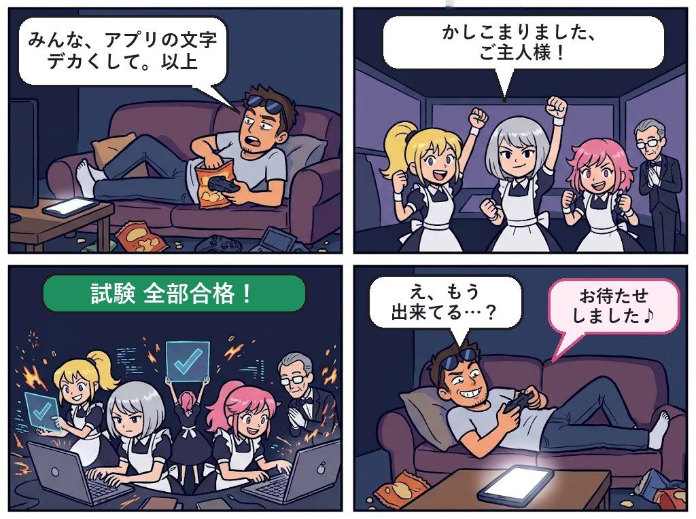
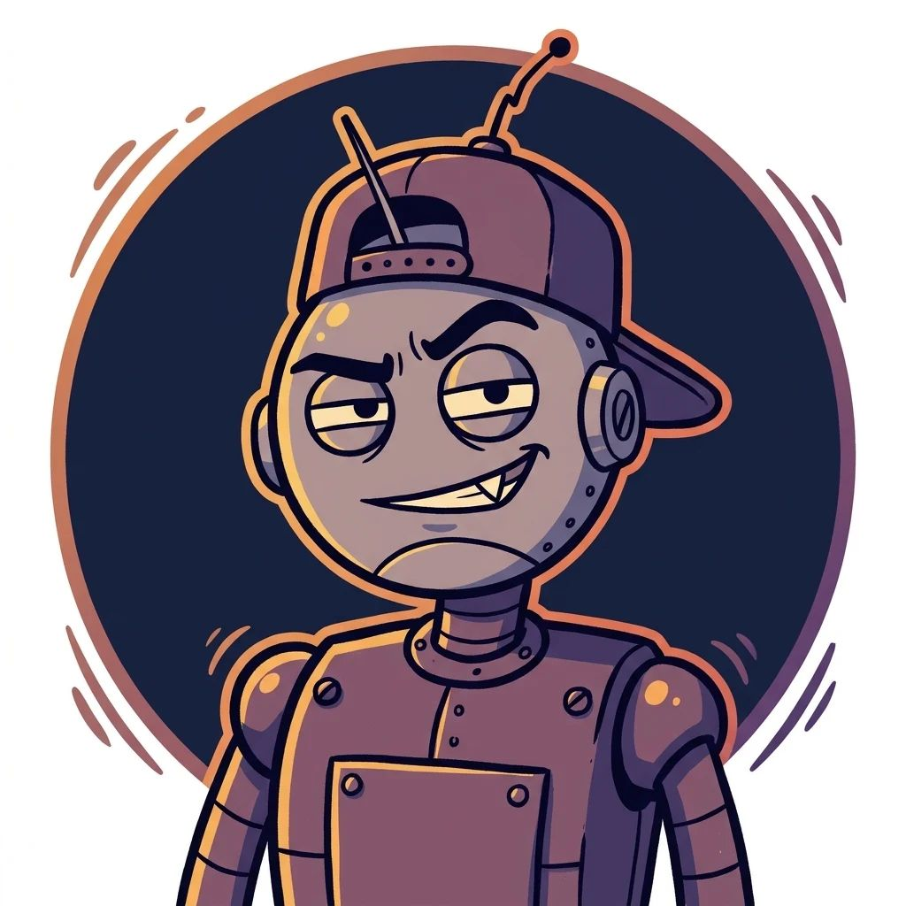
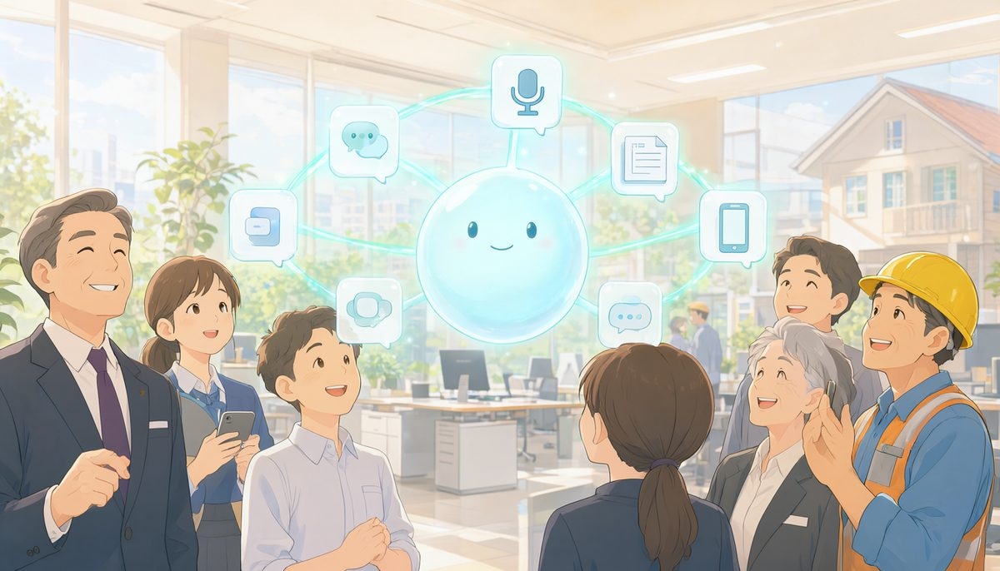

WHATどんなソフト？
「ブロブロ」と呼んで、頼み事を話すだけ。
スマホに話しかけると、パソコンの中の AI が聞き取って動きます。言い終わりは「以上」。考え込んでも、言い直しても、急かされることはありません。
書き物、調べ物、段取り、そしてソフトづくりまで。手がふさがっていても、ソファに寝転がっていても、声だけで仕事が進みます。
STORYつくった思い

プログラムが書けなくても、
ソフトはつくれる。
HIVOT は、コードを一行も書かない人が、声だけでソフトをつくり、直し、育ててきた現場から生まれました。「アプリの文字、もっと大きくして。以上」――それだけで、次に開いた時には直っている。
その体験を、誰でも使えるように。だからフリーソフトとして公開しています。
願わくは、このソフトが平和のために使われ、人類とＡＩの架け橋とならんことを。
FORこんな人に
- 思いついた事を、その場で形にしたい人
- キーボードより、話す方が早い人
- パソコン仕事を、もっと楽にしたい人
- 自分専用の道具を、自分でつくってみたい人
FEATURESできる事

話した事を書き留める
思いつき、打ち合わせのメモ、日々の記録。話すそばから文字に残します。
思い出す・調べる
「あれ、いつ決めたっけ？」も声で。前に話した事や、調べ物の答えを返します。
書類をつくる
文書や PDF の下書きを、頼んだ通りに仕上げます。
ソフトをつくる・直す
「ここをこう変えて」と話すだけで、ソフトの手直しや新しい機能づくりまで進みます。
STARTはじめ方
スマホだけで動く手軽な「HIVOT lite」もあります。
ALL CONNECTED最後に、ひとつだけ。
ここまで見てくださった、察しのいいあなたなら、もうお気づきかもしれません。

KAI のソフトは、全部つながります。
どれか1つを入れていただければ、ほかのソフトも同じ所から、いつでも足していけます。使うソフトが増えるほど、毎日の仕事はもっと軽く、もっと楽しくなります。
- 契約するだけ むずかしい準備はいりません。
- 明日から 思い立ったら、すぐに始められます。
- 誰でも、すぐ全部 どなたでも、すべての機能をすぐにお使いいただけます。
そして、もうひとつ。「こんな機能があったらいいのに」というご希望があれば、遠慮なくお聞かせください。足していける作りだからこそ、あなたの欲しい機能を柔軟に取り入れて、形にできます。
御社の野望のお手伝いをします。